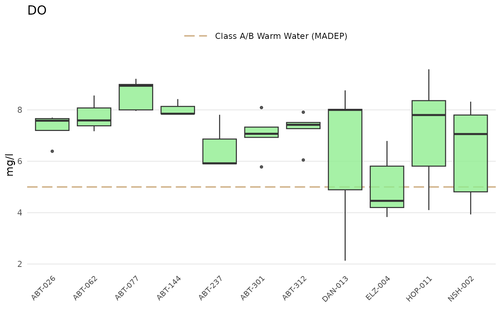
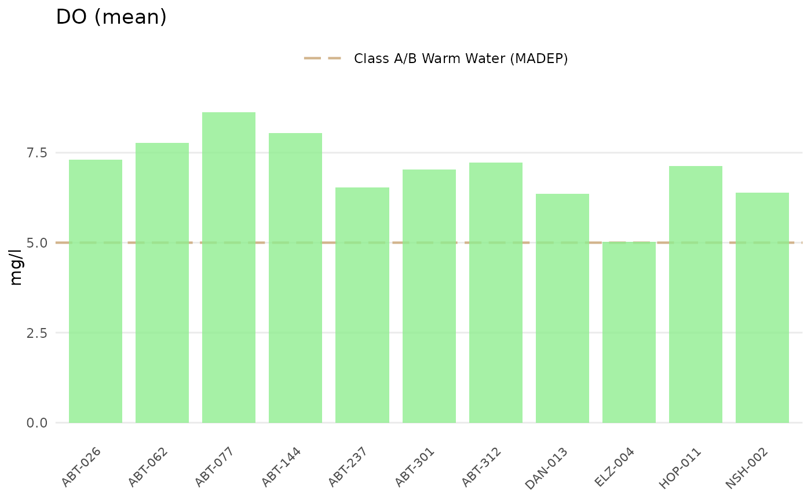
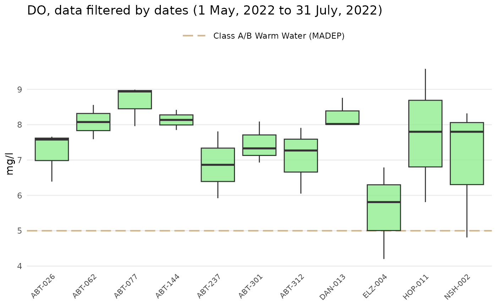
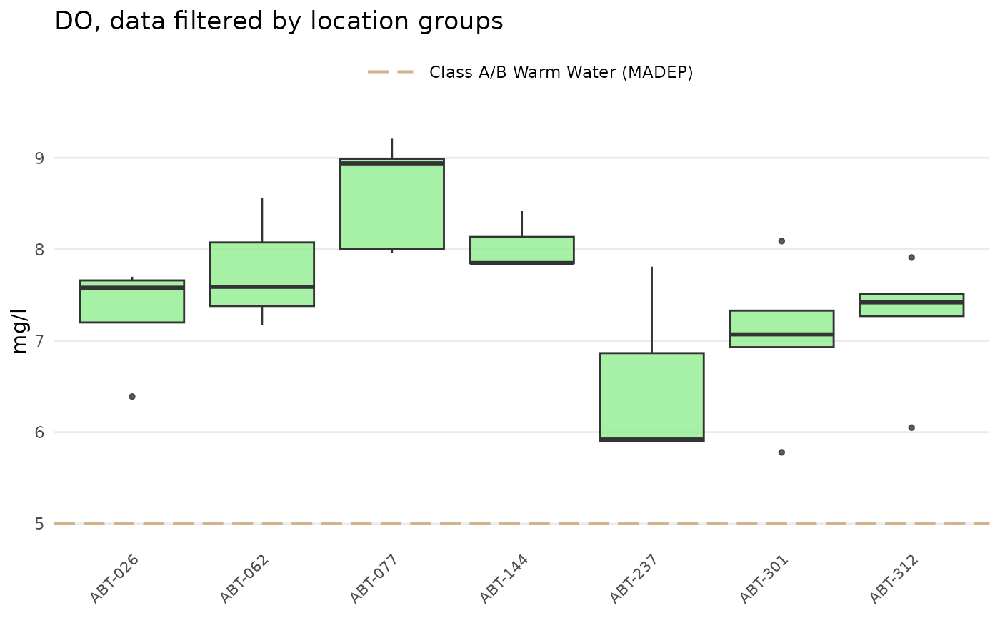

Analyze data by sites in results file
Usage
anlzMWRsite(
res = NULL,
param,
acc = NULL,
sit = NULL,
fset = NULL,
type = c("box", "jitterbox", "bar", "jitterbar", "jitter"),
thresh,
threshlab = NULL,
threshcol = "tan",
site = NULL,
resultatt = NULL,
locgroup = NULL,
dtrng = NULL,
confint = FALSE,
fill = "lightgreen",
alpha = 0.8,
width = 0.8,
yscl = "auto",
sumfun = yscl,
byresultatt = FALSE,
ttlsize = 1.2,
bssize = 11,
runchk = TRUE,
warn = TRUE
)Arguments
- res
character string of path to the results file or
data.framefor results returned byreadMWRresults- param
character string of the parameter to plot, must conform to entries in the
"Simple Parameter"column ofparamsMWR- acc
character string of path to the data quality objectives file for accuracy or
data.framereturned byreadMWRacc- sit
optional character string of path to the site metadata file or
data.frameof site metadata returned byreadMWRsites, required iflocgroupis notNULL- fset
optional list of inputs with elements named
res,acc,frecom,sit, orwqxoverrides the other arguments- type
character indicating
"box","jitterbox","bar","jitterbar"or"jitter", see details- thresh
character indicating if relevant freshwater or marine threshold lines are included, one of
"fresh","marine", or"none", or a single numeric value to override the values included with the package- threshlab
optional character string indicating legend label for the threshold, required only if
threshis numeric- threshcol
character indicating color of threshold lines if available
- site
character string of sites to include, default all
- resultatt
character string of result attributes to plot, default all
- locgroup
character string of location groups to plot from the
"Location Group"column in the site metadata file, optional and only ifsitis notNULL- dtrng
character string of length two for the date ranges as YYYY-MM-DD, default all
- confint
logical indicating if confidence intervals are shown, only applies if
typeis"bar"or"jitterbar"- fill
numeric indicating fill color for boxplots or barplots
- alpha
numeric from 0 to 1 indicating transparency of fill color
- width
numeric for width of boxplots or barplots
- yscl
character indicating one of
"auto"(default),"log", or"linear", see details- sumfun
character indicating one of
"auto","mean","geomean","median","min", or"max", see details- byresultatt
logical indicating if the plot has sites grouped separately by result attributes, see details
- ttlsize
numeric value indicating font size of the title relative to other text in the plot
- bssize
numeric for overall plot text scaling, passed to
theme_minimal- runchk
logical to run data checks with
checkMWRresultsorcheckMWRacc, applies only ifresoraccare file paths- warn
logical to return warnings to the console (default)
Value
A ggplot object that can be further modified.
Details
Summaries of a parameter for each site are shown as boxplots if type = "box" or as barplots if type = "bar". Points can be jittered over the boxplots by setting type = "jitterbox" or jittered over the barplots by setting type = "jitterbar". Setting type = "jitter" will show only the jittered points. For type = "bar" or type = "jitterbar", 95% confidence intervals can also be shown if confint = TRUE and they can be estimated (i.e., more than one result value per bar and sumfun is "auto", "mean", or "geomean").
Threshold lines applicable to marine or freshwater environments can be included in the plot by using the thresh argument. These thresholds are specific to each parameter and can be found in the thresholdMWR file. Threshold lines are plotted only for those parameters with entries in thresholdMWR and only if the value in `Result Unit` matches those in thresholdMWR. The threshold lines can be suppressed by setting thresh = 'none'. A user-supplied numeric value can also be used for the thresh argument to override the default values. An appropriate label must also be supplied to threshlab if thresh is numeric.
The y-axis scaling as arithmetic (linear) or logarithmic can be set with the yscl argument. If yscl = "auto" (default), the scaling is determined automatically from the data quality objective file for accuracy, i.e., parameters with "log" in any of the columns are plotted on log10-scale, otherwise arithmetic. Setting yscl = "linear" or yscl = "log" will set the axis as linear or log10-scale, respectively, regardless of the information in the data quality objective file for accuracy.
Similarly, the data will be summarized if type is "bar" or "jitterbar" based on the value passed to sumfun. The default if no value is provided to sumfun is to use the appropriate summary based on the value provided to yscl. If yscl = "auto" (default), then sumfun = "auto", and the mean or geometric mean is used for the summary based on information in the data quality objective file for accuracy. Using yscl = "linear" or yscl = "log" will default to the mean or geometric mean summary if no value is provided to sumfun. Any other appropriate value passed to sumfun will override the value passed to yscl. Valid summary functions for sumfun include "auto", "mean", "geomean", "median", "min", or "max").
Any entries in resdat in the "Result Value" column as "BDL" or "AQL" are replaced with appropriate values in the "Quantitation Limit" column, if present, otherwise the "MDL" or "UQL" columns from the data quality objectives file for accuracy are used. Values as "BDL" use one half of the appropriate limit.
The byresultatt argument can be used to group sites separately by result attributes. For example, sites with E. coli samples can be grouped by "Dry" or "Wet" conditions if present in the "Result Attribute" column. Filtering by sites first using the site argument is advised to reduce the amount of data that are plotted. The grouping can be filtered further by passing appropriate values in the "Result Attribute" column to the resultatt argument. Note that specifying result attributes with resultatt and setting byresultatt = FALSE will filter the plot data by the result attributes but will not plot the results separately.
Examples
# results data path
respth <- system.file('extdata/ExampleResults.xlsx', package = 'MassWateR')
# results data
resdat <- readMWRresults(respth)
#> Running checks on results data...
#> Checking column names... OK
#> Checking all required columns are present... OK
#> Checking valid Activity Types... OK
#> Checking Activity Start Date formats... OK
#> Checking depth data present... OK
#> Checking for non-numeric values in Activity Depth/Height Measure... OK
#> Checking Activity Depth/Height Unit... OK
#> Checking Activity Relative Depth Name formats... OK
#> Checking values in Activity Depth/Height Measure > 1 m / 3.3 ft... OK
#> Checking Characteristic Name formats... OK
#> Checking Result Values... OK
#> Checking for non-numeric values in Quantitation Limit... OK
#> Checking QC Reference Values... OK
#> Checking for missing entries for Result Unit... OK
#> Checking if more than one unit per Characteristic Name... OK
#> Checking acceptable units for each entry in Characteristic Name... OK
#>
#> All checks passed!
# accuracy path
accpth <- system.file('extdata/ExampleDQOAccuracy.xlsx',
package = 'MassWateR')
# accuracy data
accdat <- readMWRacc(accpth)
#> Running checks on data quality objectives for accuracy...
#> Checking column names... OK
#> Checking all required columns are present... OK
#> Checking column types... OK
#> Checking no "na" in Value Range... OK
#> Checking for text other than <=, ≤, <, >=, ≥, >, ±, %, AQL, BQL, log, or all... OK
#> Checking overlaps in Value Range... OK
#> Checking gaps in Value Range... OK
#> Checking Parameter formats... OK
#> Checking for missing entries for unit (uom)... OK
#> Checking if more than one unit (uom) per Parameter... OK
#> Checking acceptable units (uom) for each entry in Parameter... OK
#> Checking empty columns... OK
#>
#> All checks passed!
# site data path
sitpth <- system.file('extdata/ExampleSites.xlsx', package = 'MassWateR')
# site data
sitdat <- readMWRsites(sitpth)
#> Running checks on site metadata...
#> Checking column names... OK
#> Checking all required columns are present... OK
#> Checking for missing latitude or longitude values... OK
#> Checking for non-numeric values in latitude... OK
#> Checking for non-numeric values in longitude... OK
#> Checking for positive values in longitude... OK
#> Checking for missing entries for Monitoring Location ID... OK
#>
#> All checks passed!
# site trends, boxplot
anlzMWRsite(res = resdat, param = 'DO', acc = accdat, type = 'box', thresh = 'fresh')

# site trends, barplot
anlzMWRsite(res = resdat, param = 'DO', acc = accdat, type = 'bar', thresh = 'fresh')

# site trends, May to July only
anlzMWRsite(res = resdat, param = 'DO', acc = accdat, type = 'box', thresh = 'fresh',
dtrng = c('2022-05-01', '2022-07-31'))

# grouping by result attribute
anlzMWRsite(res = resdat, param = 'DO', acc = accdat, type = 'box', thresh = 'fresh',
site = c('ABT-062', 'ABT-077'), byresultatt = TRUE)
# site trends by location group, requires sitdat
anlzMWRsite(res = resdat, param = 'DO', acc = accdat, sit = sitdat, type = 'box',
thresh = 'fresh', locgroup = 'Assabet')
